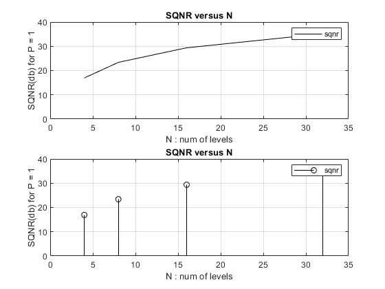
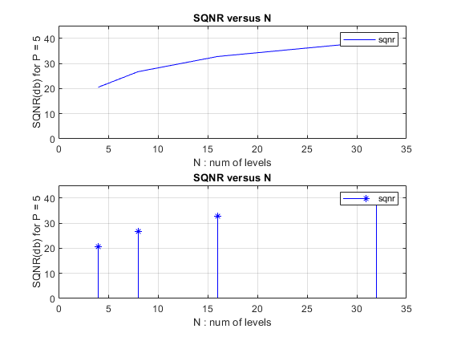
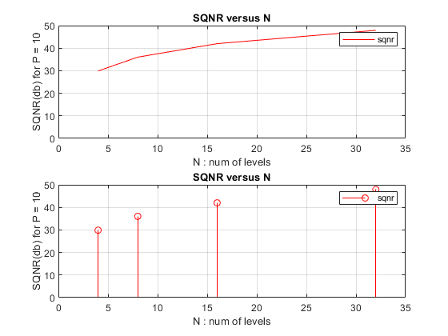

Contents
Hw1 - Q7
Teacher : Dr.Emadi Author: [SeyedAli] - [SeyedHosseini] E-mail: [alishosseini79@aut.ac.ir]
%Student-Number : [9723042] % University: Amirkabir University of Technology
clear recent data
clc;
close all;
clear ;
Initialization
for P = 1
res = 0.01 ; %resolution t = -10 : res : 10 - res ;%time m = 0;%mean of R.v s = 1 ; %variance of Random Variable x = (1/sqrt(2*pi*s^2))*exp(-((t - m).^2)/(2*s^2)); %unif Gaussian N = [4,8,16,32] ; %quantization levels
for N = 4
[partition,codebook,distor] = lloyds(x,N(1)) ; %lloyds algorithm that return MSE of distortion L = numel(x) ; Px = sum(x.^2)/L ; %power of r.v SQNR1 = Px /distor ; %signal to quantization noise ratio SQNR1 = pow2db(SQNR1) ;%signal to quantization noise ratio db
for N = 8
[partition,codebook,distor] = lloyds(x,N(2)) ; %lloyds algorithm that return MSE of distortion SQNR2 = Px /distor ; %signal to quantization noise ratio SQNR2 = pow2db(SQNR2) ;%signal to quantization noise ratio db
for N = 16
[partition,codebook,distor] = lloyds(x,N(3)) ; %lloyds algorithm that return MSE of distortion SQNR3 = Px /distor ; %signal to quantization noise ratio SQNR3 = pow2db(SQNR3) ;%signal to quantization noise ratio db
for N = 32
[partition,codebook,distor] = lloyds(x,N(4)) ; %lloyds algorithm that return MSE of distortion SQNR4 = Px /distor ; %signal to quantization noise ratio SQNR4 = pow2db(SQNR4) ;%signal to quantization noise ratio db fprintf('As we increase 1 bit, 6db is added to SQNR') ; sqnr = [SQNR1 , SQNR2,SQNR3,SQNR4]; %Sqnr vector
As we increase 1 bit, 6db is added to SQNR
Plotting for P = 1
figure(1) subplot(211) plot(N,sqnr,'k') ylabel("SQNR(db) for P = 1") xlabel("N : num of levels") title("SQNR versus N") legend('sqnr') grid on; axis([0 35 0 40]) subplot(212) stem(N,sqnr,'k') ylabel("SQNR(db) for P = 1") xlabel("N : num of levels") title("SQNR versus N") legend('sqnr') grid on; axis([0 35 0 40]) %%%%%%%%%%%%%%%%%%%%%%%%%%%%%%%%%%%%%%%%%%%%%%%%%%%%%%%%%%%%%%
for P = 5
clc; res = 0.01 ; %resolution t = -10 : res : 10 - res ;%time m = 0;%mean of R.v s = 5 ; %variance of Random Variable x = (1/sqrt(2*pi*s^2))*exp(-((t - m).^2)/(2*s^2)); %unif Gaussian N = [4,8,16,32] ; %quantization levels
for N = 4
[partition,codebook,distor] = lloyds(x,N(1)) ; %lloyds algorithm that return MSE of distortion L = numel(x) ; Px = sum(x.^2)/L ; %power of r.v SQNR1 = Px /distor ; %signal to quantization noise ratio SQNR1 = pow2db(SQNR1) ;%signal to quantization noise ratio db
for N = 8
[partition,codebook,distor] = lloyds(x,N(2)) ; %lloyds algorithm that return MSE of distortion SQNR2 = Px /distor ; %signal to quantization noise ratio SQNR2 = pow2db(SQNR2) ;%signal to quantization noise ratio db
for N = 16
[partition,codebook,distor] = lloyds(x,N(3)) ; %lloyds algorithm that return MSE of distortion SQNR3 = Px /distor ; %signal to quantization noise ratio SQNR3 = pow2db(SQNR3) ;%signal to quantization noise ratio db
for N = 32
[partition,codebook,distor] = lloyds(x,N(4)) ; %lloyds algorithm that return MSE of distortion SQNR4 = Px /distor ; %signal to quantization noise ratio SQNR4 = pow2db(SQNR4) ;%signal to quantization noise ratio db fprintf('As we increase 1 bit, 6db is added to SQNR') ; sqnr = [SQNR1 , SQNR2,SQNR3,SQNR4]; %Sqnr vector
As we increase 1 bit, 6db is added to SQNR
Plotting for P = 5
figure(2) subplot(211) plot(N,sqnr,'b') ylabel("SQNR(db) for P = 5") xlabel("N : num of levels") title("SQNR versus N") legend('sqnr') grid on; axis([0 35 0 45]) subplot(212) stem(N,sqnr,'b*') ylabel("SQNR(db) for P = 5") xlabel("N : num of levels") title("SQNR versus N") legend('sqnr') grid on; axis([0 35 0 45]) %%%%%%%%%%%%%%%%%%%%%%%%%%%%%%%%%%%%%%%%%%%%%%%%%%%%%%%%%%%%%%%%%
for P = 10
clc; res = 0.01 ; %resolution t = -10 : res : 10 - res ;%time m = 0;%mean of R.v s = 10 ; %variance of Random Variable x = (1/sqrt(2*pi*s^2))*exp(-((t - m).^2)/(2*s^2)); %unif Gaussian N = [4,8,16,32] ; %quantization levels
for N = 4
[partition,codebook,distor] = lloyds(x,N(1)) ; %lloyds algorithm that return MSE of distortion L = numel(x) ; Px = sum(x.^2)/L ; %power of r.v SQNR1 = Px /distor ; %signal to quantization noise ratio SQNR1 = pow2db(SQNR1) ;%signal to quantization noise ratio db
for N = 8
[partition,codebook,distor] = lloyds(x,N(2)) ; %lloyds algorithm that return MSE of distortion SQNR2 = Px /distor ; %signal to quantization noise ratio SQNR2 = pow2db(SQNR2) ;%signal to quantization noise ratio db
for N = 16
[partition,codebook,distor] = lloyds(x,N(3)) ; %lloyds algorithm that return MSE of distortion SQNR3 = Px /distor ; %signal to quantization noise ratio SQNR3 = pow2db(SQNR3) ;%signal to quantization noise ratio db
for N = 32
[partition,codebook,distor] = lloyds(x,N(4)) ; %lloyds algorithm that return MSE of distortion SQNR4 = Px /distor ; %signal to quantization noise ratio SQNR4 = pow2db(SQNR4) ;%signal to quantization noise ratio db fprintf('As we increase 1 bit, 6db is added to SQNR') ; sqnr = [SQNR1 , SQNR2,SQNR3,SQNR4]; %Sqnr vector
As we increase 1 bit, 6db is added to SQNR
Plotting for P = 10
figure(3) subplot(211) plot(N,sqnr,'r -') ylabel("SQNR(db) for P = 10") xlabel("N : num of levels") title("SQNR versus N") legend('sqnr') grid on; axis([0 35 0 50]) subplot(212) stem(N,sqnr,'r -') ylabel("SQNR(db) for P = 10") xlabel("N : num of levels") title("SQNR versus N") legend('sqnr') grid on; axis([0 35 0 50])